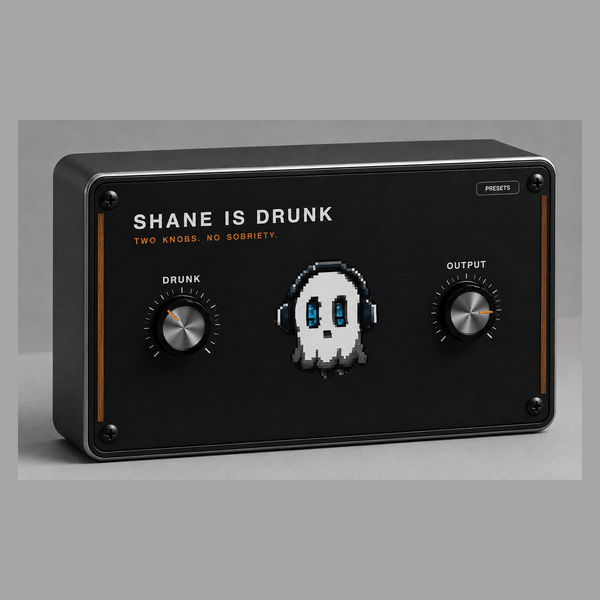

WHAT'S NEW IN 1.4
· Maintenance update — rebuilt, re-signed and notarized for macOS and Windows
FORMATS macOS AU + VST3 + AAX (Pro Tools), Universal (Intel + Apple Silicon) Windows VST3 + AAX (Pro Tools), 64-bit INSTALL — macOS Open the .pkg and follow the installer. Signed and notarized by Apple. INSTALL — WINDOWS 1. Unzip. 2. Copy the .vst3 to C:\Program Files\Common Files\VST3 3. Restart your DAW and rescan plugins.UPDATES
Buy once, updated forever. Every future build is free to you — Gumroad emails you when there is a new one. No subscription, no upgrade fee, no re-purchase.
FOLLOW ALONG
New plugins and what goes into them: